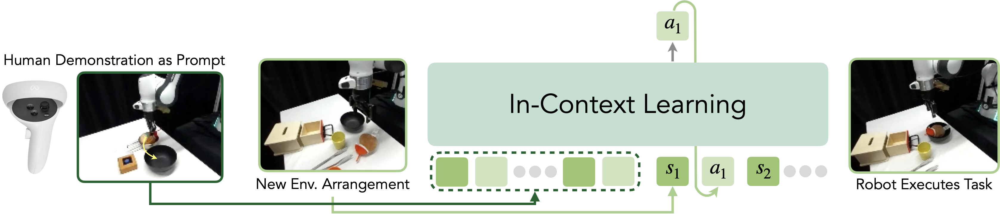
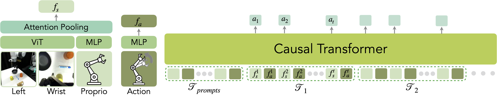
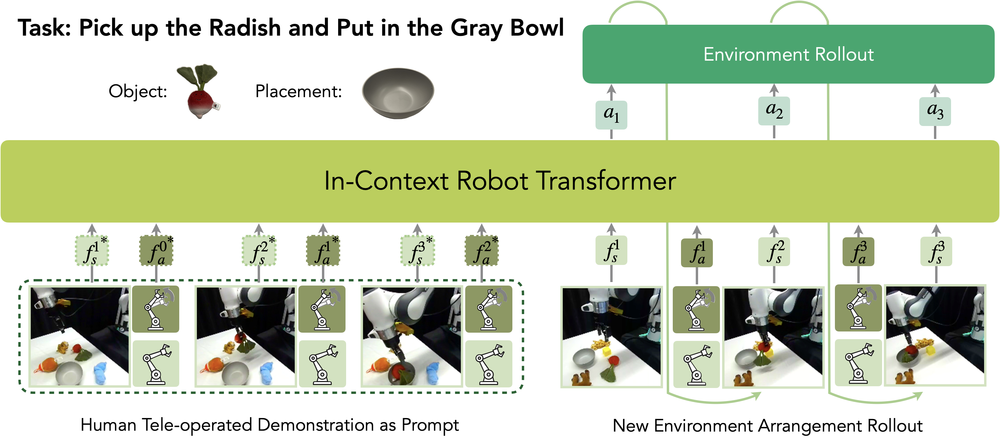
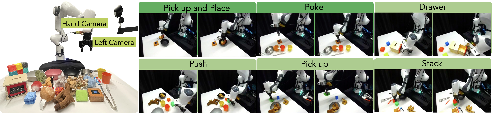
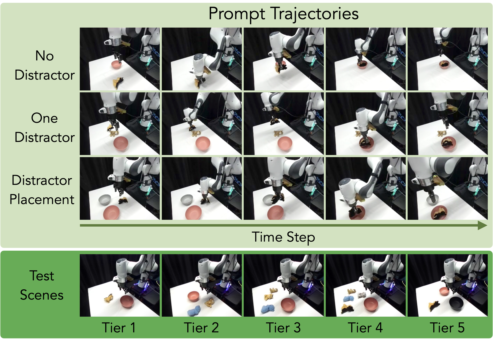

초록
본 연구에서는 로봇이 기본 정책 매개변수를 업데이트하지 않고 입력 단계에서 제공된 맥락 정보를 해석하여 새로운 작업을 수행하는, 실제 로봇에서의 인컨텍스트 모방 학습(in-context imitation learning)을 수행하기 위해 다음 토큰 예측(next-token prediction) 모델을 향상시키는 방법을 탐구한다. 우리는 언어 데이터나 보상 함수에 의존하지 않고 감각운동 궤적에 대해 자기회귀적 예측을 수행하는 인과적 트랜스포머(causal transformer)인 In-Context Robot Transformer (ICRT)를 제안한다. 이러한 정식화는 인간의 원격 조작을 통해 수집된 이미지 관측, 행동 및 상태 튜플로 구성된 새로운 작업의 감각운동 궤적을 모델에 프롬프트로 제공함으로써, 테스트 시점에 새로운 작업을 학습 없이 유연하게 실행할 수 있게 한다. Franka Emika 로봇을 이용한 실험을 통해 ICRT가 프롬프트와 학습 데이터 모두와 다른 환경 구성에서도 프롬프트로 지정된 새로운 작업에 적응할 수 있음을 보여준다. 다중 작업 환경 설정에서 ICRT는 보지 못한 작업으로의 일반화 성능에서 로봇 공학 분야의 기존 최첨단 다음 토큰 예측 모델들을 크게 능가한다. 코드, 체크포인트 및 데이터는 https://icrt.dev에서 확인할 수 있다.
주요어: 다중 작업 학습, 다음 토큰 예측, 인컨텍스트 학습
1 서론
학습 기반의 단일 및 다중 작업 로봇 정책은 점점 더 유능해지고 있다 [1, 2, 3, 4, 5, 6, 7, 8, 9, 10]. 이러한 로봇 능력의 향상은 주로 관련 분야, 특히 비전 및 언어 모델링의 발전에 기인한다. 자연어 처리와 비전 문제를 모두 다음 토큰 예측으로 정식화하는 거대 언어 모델(LLM) 및 거대 비전 모델(LVM)의 최근 발전 [11, 12, 13]에 영감을 받아, 최근 연구들 역시 로봇 학습을 다음 토큰 예측 문제로 정식화하여 최첨단 성능을 달성했다 [7, 8, 14, 15]. 이와 동시에 대규모 로봇 데이터셋을 수집하고 [16, 17, 18, 19, 20, 21, 22, 23] 이러한 데이터셋에서 모델을 사전 학습시키는 연구 [24, 25, 26, 27, 15]가 급증하고 있다.
대규모 데이터셋에서 사전 학습되고 일정 수준의 일반화 능력을 보여줌에도 불구하고, 추가적인 학습 없이 서로 다른 환경에서 보지 못한 작업을 수행하도록 이러한 모델들을 가르치는 것은 여전히 어려운 과제이다. 새로운 작업을 완료하기 위해서는 원격 조작을 통한 새로운 인간 시연이나 수작업으로 제작된 모션 프리미티브로부터 수집된 새로운 데이터뿐만 아니라, 또 다른 단계의 모델 미세 조정(fine-tuning)이 필요한 경우가 많다. 이 과정은 작업 흐름에 복잡성을 더해 실제 환경에서 이러한 방법들을 적용하기 어렵게 만든다. 이상적으로는 하나 또는 몇 개의 시연이 주어졌을 때 로봇이 그 작업을 즉시 수행할 수 있어야 한다. 각자의 영역에서 LLM과 LVM [11, 12, 13]은 인컨텍스트 학습(in-context learning)이라는 유사한 능력을 보여주었다. 이는 추가 학습 없이 추론 시점에 제공된 프롬프트에 해당하는 작업에 모델이 신속하게 적응하고 이를 인식할 수 있도록 하는 능력이다.
다음 토큰 예측 모델의 인컨텍스트 학습 능력이 비전과 언어 영역에만 국한되는 것일까? 본 논문에서는 다음 토큰 예측 모델을 실제 로봇의 인컨텍스트 학습을 수행하도록 확장하는 방법을 탐구하는 In-Context Robot Transformer (ICRT)를 소개한다. ICRT의 경우, 맥락(context)은 새로운 작업에 해당하는 일련의 로봇 궤적으로 제공된다. 모델은 추가 학습 없이 다른 환경 구성에서 작업을 수행하기 위해 이 맥락으로부터 학습한다. 로봇 궤적은 이미지 관측, 로봇 고유 감각 상태(proprioceptive state), 행동의 시퀀스이다. 이 궤적은 작업 프리미티브와 로봇이 상호작용해야 하는 객체를 암묵적으로 인코딩한다. 모델은 프롬프트에서 이 정보를 추출한 다음, 현재 환경에서 유사한 패턴을 따르는 행동을 실행한다.

기존의 원샷(one-shot) 또는 퓨샷(few-shot) 모방 학습 접근법과 비교하여, ICRT는 복잡한 손실 함수나 핵심 포인트(key-point) 선택을 피하고 연속 제어를 위해 로봇 궤적에서 직접 작동하는 단순한 프레임워크를 제공한다. 또한, 로봇 학습을 위한 기존의 다음 토큰 예측 모델들과 달리, ICRT는 긴 맥락 창(context window)을 특징으로 하여 동일한 작업의 여러 감각운동 궤적에 대해 학습하고 추론 중에 하나 이상의 감각운동 궤적을 프롬프트로 사용할 수 있다.
나아가, 우리는 데이터셋의 특정 속성이 실제 로봇에서 효과적인 인컨텍스트 학습을 가능하게 하는 데 매우 중요하다는 것을 관찰했다. 구체적으로, 동일한 초기 관측에서 여러 작업을 수행할 수 있도록 하는 데이터셋이 특히 유익하다. 이러한 시나리오에서는, 각 환경마다 로봇이 상호작용할 고유한 객체가 존재하는 기존의 단일 작업 데이터셋 및 많은 다중 작업 데이터셋과 달리, 모델이 작업을 올바르게 식별하고 상호작용할 적절한 객체를 결정하기 위해 프롬프트에 의존해야만 한다.
우리는 다음과 같은 기여를 한다:
-
1.
우리는 실제 로봇에서 인컨텍스트 학습을 수행하는 다음 토큰 예측 모델인 ICRT를 소개한다. ICRT는 새로운 작업에 대한 로봇의 감각운동 궤적을 맥락으로 받아 보지 못한 환경 구성에서 지정된 작업을 수행한다.
-
2.
우리는 추론 시점에 다중 작업 및 인컨텍스트 능력을 촉진하기 위한 새로운 다중 작업 로봇 데이터셋과 학습 패러다임을 제공한다.
-
3.
우리는 다양한 수준의 작업 난이도에서 Franka Emika 로봇으로 물리적 실험을 수행하여 ICRT의 인컨텍스트 학습 능력을 평가한다. 결과는 ICRT가 프롬프트에 의해 지정된 보지 못한 작업을 수행할 수 있음을 보여준다.
2 관련 연구
2.1 로봇 공학을 위한 모방 학습
모방 학습은 로봇에게 다양한 기술을 부여하기 위한 대중적이고 효과적인 패러다임이다. 이 분야에서 가장 단순한 알고리즘인 행동 복제(behavior cloning)는 광범위한 작업에 걸쳐 성공을 거두었다 [28, 29, 30]. 최근 몇 년 동안 에너지 기반 모델 [31] 및 확산 모델(diffusion models) [1]과 같은 대안적인 아키텍처도 제안되었다. 일반적으로 이러한 접근 방식은 각 작업마다 개별적인 모델을 학습시켜야 하지만, 학습 후 이러한 작업 특정 모델로부터 다중 작업 정책을 증류(distill)할 수도 있다 [32].
최근의 연구 성과들은 시퀀스 모델링에서 다음 토큰 예측(next-token prediction)을 위해 트랜스포머(transformer)를 사용하는 것이 언어 및 비전 영역 모두에서, 특히 다중 작업 학습(multi-task learning) [33, 12, 34]에 매우 효과적임을 보여주었다. 이러한 접근 방식은 로봇 러닝 분야로도 확장되어, 트랜스포머 기반 아키텍처를 사용하여 로봇 행동 계획을 다음 토큰 예측 작업으로 프레이밍한다 [35, 36, 7, 8, 14, 15]. 이러한 모델에서 관측값은 다음 로봇 행동을 예측하는 데 사용된다. 또한, 일반주의 에이전트(generalist agent)와 강건한 로봇 정책을 개발하기 위해, 여러 작업을 아우르는 크고 다양한 데이터셋에서 정책을 학습시키는 것이 더 강건하고 일반화 가능한 모델로 이어질 수 있음이 최근 연구를 통해 입증되었다 [37, 38, 39, 40, 15, 5, 7, 36]. Octo [15]와 OpenVLA [14]는 대규모 로봇 데이터셋에서 학습되었으며, 목표 이미지와 언어 명령(Octo) 또는 언어 명령만(OpenVLA)을 조건으로 하는 최첨단 정책이다. Octo는 디퓨전 헤드(diffusion head)가 장착된 트랜스포머를 채택하여, 언어 명령이나 목표 이미지와 같은 목표 조건과 현재 이미지 관측값을 처리하여 로봇 행동을 예측한다. OpenVLA는 사전 학습된 비전-언어 모델(vision-language model)을 미세 조정하여 비전 관측값과 언어 명령이 주어졌을 때 로봇 행동을 예측한다.
2.2 인컨텍스트 학습(In-Context Learning)
대규모 데이터셋에서 학습하려는 노력에도 불구하고, 이러한 정책들은 여전히 새로운 작업이나 환경에서 어려움을 겪으며 종종 미세 조정을 필요로 한다. 여러 연구에서 새로운 작업으로 일반화할 때 모델 미세 조정의 필요성을 우회하거나 샘플 효율성을 높이는 방법을 탐구하여, 제로샷(zero-shot) 및 퓨샷(few-shot) 모방 학습의 발전을 이끌어냈다. 메타 러닝 [41, 42, 43]의 일부 접근 방식은 광범위한 작업에 대해 학습한 후 퓨샷 모방 학습을 가능하게 하지만, 여전히 각 새로운 도메인에서 미세 조정을 요구한다. 다른 연구들은 새로운 작업으로 일반화하기 위해 모델 매개변수를 미세 조정할 필요가 없다. Brown et al. [33]은 모델 매개변수를 미세 조정하는 연구들과 구별하기 위해 이를 "인컨텍스트 학습(in-context learning)"이라 지칭한다.
많은 인컨텍스트 학습 방법들은 종종 대조 학습(contrastive learning)을 사용하여 컨텍스트 인코더를 학습시키며, 이는 잠재 공간(latent space)에서 테스트 작업과 가장 유사한 학습 작업을 식별한다 [37, 44]. 그러나 이러한 방법들을 다음 토큰 예측 프레임워크 내에 어떻게 효과적으로 통합할 것인가는 여전히 불분명하다. Valassakis et al. [45]은 시연 동안 로봇의 말단 장치(end-effector)를 객체의 상대적 포즈와 정렬하도록 비주얼 서보잉(visual servoing) 네트워크를 학습시켜 원샷(one-shot) 인컨텍스트 학습을 달성했으나, 이 접근 방식은 추가적인 객체 세그멘테이션 모델을 필요로 한다. Di Palo and Johns [46]는 키포인트 액션 토큰(Keypoint Action Tokens)을 도입하여, 퓨샷 프롬프팅을 통해 시연 궤적을 3D 좌표로 표현함으로써 거대 언어 모델을 사용한 인컨텍스트 모방 학습을 보여주었다. 이러한 접근 방식들과 달리, ICRT는 추가적인 인지 모듈 없이 작동하며 원시 이미지 관측값(raw image observations)을 직접 처리한다. 또한, Vid2Robot [47]은 인간의 시연 비디오와 현재 로봇 상태를 프롬프트로 사용하여 로봇 행동을 생성하는 인코더-디코더 트랜스포머를 개발했다. 그러나 이 방법은 많은 보조 손실(auxiliary losses)을 필요로 하는 반면, ICRT는 단순한 다음 토큰 예측 손실을 사용한다.
본 논문에서 우리는 로봇을 이용해 현실 세계에서 인컨텍스트 모방 학습을 수행할 수 있도록 다음 토큰 예측 모델을 향상시키는 데 초점을 맞춘다. ICRT는 새로운 작업의 로봇 센서리모터 궤적(sensorimotor trajectories)을 트랜스포머 기반 모델의 프롬프트로 직접 사용함으로써 추가적인 컨텍스트 인코더의 필요성을 우회한다. ICRT는 독창적인 연구인 원샷 모방 학습(One-Shot Imitation Learning) [48] 및 프롬프팅 디시전 트랜스포머(Prompting Decision Transformer) [49]와 밀접한 관련이 있다. [48]는 새로운 작업에 대한 시연 시퀀스와 현재 관측값 간의 교차 주의집중(cross-attention)을 적용하여 다음 행동을 예측하는 반면, [49]은 오프라인 강화 학습에서 정책 생성을 가이드하기 위해 작업 특정 정보를 인코딩하는 짧은 궤적 프롬프트를 채택한다. 그러나 이 두 접근 방식 모두 이미지 관측값을 입력으로 고려하지 않으며, 시뮬레이션 환경을 벗어난 작업으로 확장하지도 못했다. 이와 대조적으로, ICRT는 보상을 모델링하지 않고, 현저히 더 긴 컨텍스트 윈도우를 활용하며, 이미지 관측값을 사용하여 실제 물리적 실험에서 인컨텍스트 학습 능력을 입증한다.
3 문제 정의
우리는 연속 제어 환경의 실제 로봇에서 인컨텍스트 모방 학습을 조사한다. 목표는 다중 작업 데이터셋을 사용하여 인컨텍스트 학습 능력을 갖춘 모델을 학습시키는 것이다. 테스트 시점에 모델은 새로운 인간 원격 조종 로봇 시연 몇 개를 프롬프트로 받아들임으로써 새로운 환경 구성에서 보지 못한 작업을 수행할 수 있다. 우리는 환경 구성을 장면 내의 객체들과 그 위치로 정의한다. 중요한 점은, 이것이 새로운 시연에 대한 어떠한 추가 학습도 없이 달성된다는 것이다.
우리는 모션 프리미티브(motion primitives)를 서로 다른 작업을 완료하는 데 사용되는 고유한 로봇 모션으로 정의한다. 각 작업은 1) 모션 프리미티브와 2) 로봇이 해당 프리미티브를 사용하여 상호작용하는 객체 세트로 특징지어진다. 테스트 시점의 환경 구성을 프롬프트의 구성과 다르게 변경함으로써, 적절한 모션 프리미티브를 결정하고 상호작용할 올바른 객체를 식별하는 모델의 능력을 평가한다. 본 연구에서는 학습 데이터의 모션 프리미티브를 사용하되 보지 못한 객체가 포함된 작업을 새로운 작업으로 간주한다 (예를 들어, 호랑이 인형을 집어 올리는 것으로 학습하고 큐브를 집어 올리는 것으로 테스트함).
ICRT 실험을 위해 다음과 같은 가정을 세운다:
-
1.
모델은 단일 로봇의 다양한 시연으로 구성된 데이터셋에서 학습된다. 각 시연 궤적은 고정된 위치의 RGB 카메라와 손목에 장착된 RGB 카메라로부터의 관측값, 고유 수용 감각(proprioception), 행동(action) 및 관련 작업 유형을 포함한다.
-
2.
로봇에서 테스트되는 작업은 인간이 로봇을 원격 조종하여 완료할 수 있으므로 로봇의 도달 가능한 작업 공간 내에 존재한다.
4 접근법
본 섹션에서는 먼저 인컨텍스트 모방 학습을 용이하게 하기 위한 데이터 구성에 대해 소개한다. 그런 다음 데이터를 활용하기 위한 트랜스포머 기반 정책과 그 학습 공식을 소개한다.
4.1 데이터 구성
모델 학습을 위해, 우리는 비주얼모터 궤적 의 데이터셋 을 고려한다. 길이 의 각 궤적은 카메라 이미지 , 로봇의 고유 수용 감각 상태 , 행동 의 시퀀스인 이다. 우리는 절대 말단 장치 포즈를 로봇의 고유 수용 감각 상태로 사용하고, 시간 단계 사이의 델타 로봇 말단 장치 포즈를 행동으로 사용하며, 이는 델타 병진, 델타 회전 및 연속적인 그리퍼 행동으로 구성된다 (자세한 내용은 부록 Section 8.4 참조). 데이터셋이 서로 겹치지 않는 작업 세트 로 분할될 수 있도록 궤적들의 그룹화가 알려져 있다고 가정하며, 이때 이고 이다. 실제로 이러한 그룹화는 데이터셋의 의미론적 레이블(semantic labels)로부터 검색할 수 있다. 본 연구에서는 기존의 대규모 로봇 데이터셋인 DROID [50]와 우리의 로봇 환경에서 수동으로 수집한 다중 작업 데이터셋인 ICRT-Multi-Task(ICRT-MT)를 활용한다.
DROID [50]는 여러 기관의 공동 노력으로 구축되었으며 76k개의 실제 세계 시연을 포함하고 있다. 우리는 30단계보다 짧고 450단계보다 긴 시연을 필터링한 후 DROID에서 10k개의 시연을 무작위로 샘플링한다. DROID 데이터셋은 인간이 지정한 언어 명령을 통해 작업을 레이블링하므로, 동일한 작업에 대해 레이블이 다를 수 있다. 우리는 언어 명령의 CLIP 텍스트 임베딩 코사인 유사도를 기반으로 시연을 그룹화하여 DROID 데이터를 정리했다. 구체적으로, 시연을 그룹화하기 위해 0.9의 임계값을 사용한다. 인컨텍스트 학습을 더욱 촉진하기 위해, 각 작업 그룹이 최소 4개의 궤적을 포함하도록 하여 서로에게 프롬프트 역할을 할 수 있는 충분한 궤적이 존재하도록 보장한다. 그 결과 ICRT 사전 학습에 사용하는 약 2k개의 궤적이 도출된다.
DROID 데이터셋의 많은 궤적들은 주어진 환경에서 단 하나의 작업만 완료할 수 있는 단일 작업 환경에서 수집된다. 이러한 환경에서 모델은 프롬프트 궤적이 수행할 현재 작업과 유사하더라도, 프롬프트를 전혀 보지 않고 현재 상태와 관측값만을 조건으로 작업을 수행하는 지름길을 학습할 수 있다. 따라서 모델이 프롬프트로부터 학습하기 위해서는 다중 작업 데이터가 매우 중요하다. 우리는 DROID 환경을 사용하여 다중 작업 데이터셋인 ICRT-Multi-Task(ICRT-MT)를 수동으로 수집했다 (그림 4). 이 데이터셋은 총 1098개의 궤적을 가지며, 집기(picking), 집어서 놓기(pick-and-place), 쌓기(stacking), 밀기(pushing), 찌르기(poking), 서랍 열고 닫기(opening and closing drawers)의 6가지 프리미티브를 가진 29개의 작업을 포함한다. 데이터 수집에 사용된 객체들과 프리미티브의 예시는 그림 4에 나와 있다. ICRT-MT에서 각 환경은 현재 관측값에 대해 2개 이상의 가능한 작업이 존재하도록 설정되어, 모델이 프롬프트로부터 모션을 구별하고 학습해야만 하도록 만든다.
학습 과정 동안, 각 궤적에 대해 이미지 관측값의 밝기와 대비를 증강함으로써 독립적으로 비전 증강(vision augmentation)을 적용한다. 또한 측면 카메라 관측값에 무작위 크롭(random crops) 및 스케일링을 적용한다. 또한 정규 가우시안 분포 에서 샘플링된 고유 수용 감각 노이즈를 적용한다. 각 에포크(epoch)마다 각 작업의 궤적 순서를 무작위로 섞고 이들을 연결하여 학습 시퀀스를 구성한다. 각 배치(batch)마다 모델의 입력으로 길이 의 서브시퀀스를 하위 샘플링하며, 여기서 는 관측값, 상태, 행동 튜플의 수로 정의되는 시퀀스 길이이다. 실제로 512단계는 보통 동일한 작업에서 나온 최대 5개의 궤적을 포함한다. 우리는 시퀀스 내에서 처음 개의 궤적을 무작위로 선택하여 프롬프트로 레이블링한다. 프롬프트에는 최소한 하나의 완전한 궤적이 포함된다. 이러한 데이터 그룹화는 궤적 간(inter-trajectory) 패턴을 포착하는 것을 목표로 하며, 모델이 프롬프트 궤적을 조건으로 행동을 생성하도록 장려한다. 이 접근 방식은 일반적으로 인트라 궤적(intra-trajectory) 행동을 모델링하는 데 집중하는 짧은 입력 시퀀스를 사용하는 전통적인 행동 복제(behavior cloning) 방법들과 다르다.

4.2 모델 아키텍처
로봇 공학 환경에서 인컨텍스트 학습(in-context learning)을 용이하게 하려면, 모델은 로봇 궤적을 데모로 제공하여 프롬프팅을 지원할 수 있도록 충분히 긴 컨텍스트 창을 가져야 한다. 우리는 ICRT 모델을 사전 학습된 비전 인코더, 각 입력 모달리티를 위한 일련의 프로젝터, 그리고 인과적 트랜스포머 백본의 세 부분으로 구성한다(그림 2).
비전 인코더 모델은 사전 학습된 비전 트랜스포머를 통해 다중 뷰 이미지 관측을 처리한다. 그러나 대부분의 시각 사전 학습 네트워크는 ImageNet이나 인간 비디오 [27, 51, 52, 24]로 학습되어, 로봇이나 그리퍼가 자주 포함되는 로봇 데이터셋의 전형적인 이미지와 비교할 때 상당한 도메인 격차를 보인다. 이러한 도메인 격차를 최소화하기 위해, 우리는 CrossMAE를 효율적인 사전 학습 방법 [55]으로 사용하여 ImageNet [54]과 Open X-Embodiment [40] 데이터를 동일한 비율로 혼합한 데이터에서 비전 트랜스포머 [53](ViT-Base)을 사전 학습한다. ICRT 모델을 학습하는 동안 효율성을 위해 비전 인코더를 동결(freeze)한다. 비전 인코더는 각 카메라에 대한 전체 특징 맵을 출력한 다음 고유수용성 감각 프로젝터(Figure 2 왼쪽)로 전달된다.
모달리티별 프로젝터 이미지 관측, 로봇의 고유수용성 감각 상태, 행동을 시퀀스 모델링을 위한 공유 잠재 공간으로 투영하기 위해, 우리는 모달리티별 프로젝터를 설계한다. 각 타임스텝에서 모델은 로봇의 상태 또는 행동을 나타내는 토큰을 입력으로 받는다. 미세한 시각 정보와 로봇의 고유수용성 감각 상태를 포착하는 단일 상태 토큰을 생성하기 위해, 단일 카메라 관측에서 얻은 모든 시각 토큰과 다층 퍼셉트론(MLP)에 의해 생성된 고유수용성 감각 임베딩 간에 어텐션 풀링 [56]을 사용한다. 각 카메라에 대해 결과로 나온 임베딩들을 연결하여 트랜스포머 잠재 차원과 동일한 차원의 단일 상태 토큰 을 생성한다. 고유수용성 감각과 유사하게, 행동은 MLP를 통해 행동 토큰 으로 임베딩된다. 이 과정은 트랜스포머로 전달되는 상태 및 행동 토큰의 시퀀스를 생성한다.

트랜스포머 모델 인코딩된 상태 및 행동 시퀀스는 Llama2 [12]의 설계를 따라 트랜스포머 모델 [57]로 전달된다. 트랜스포머는 모달리티별 프로젝터에 의해 생성된 상태 및 행동 특징 의 시퀀스를 입력으로 받는다. 우리는 적절한 위치에서 트랜스포머의 마지막 레이어로부터 상태 및 행동 출력을 생성하기 위해 MLP 디코더를 추가한다. 디코더 헤드가 있는 트랜스포머를 로 나타낸다. 따라서 원하는 출력은 시프트된 고유수용성 감각 상태 및 행동 의 시퀀스이다. 이는 가 를 예측하고 이 을 예측하므로 자연스럽게 다음 토큰 예측(next token prediction) 문제를 형성한다. 실제로는 각 타임스텝에서 다음 개의 행동을 예측하고, 최종 행동을 실행하기 위해 시간적 앙상블(temporal ensembling) [2]을 사용하는 것이 유익하다는 것을 발견했다.
Octo [15] 및 비전 트랜스포머 [53]에서 영감을 받아, 우리는 잠재 차원이 768이고 12개의 레이어를 가진 무작위로 초기화된 Llama2 모델을 고려하며, 이를 Llama2-Base라고 부른다. 또한 여러 연구에서 멀티모달 입력이 대규모 언어 모델 [34, 58, 59, 8, 60]에 정렬될 수 있음을 보여주었다. 멀티모달 언어 모델인 Palm-E [10]는 로봇 제어 [8]에 직접 통합되었을 때 일반화 성능을 향상시키는 데 성공적임을 보여주었다. 따라서 우리는 사전 학습된 Llama2-7B로 트랜스포머를 초기화하여 인컨텍스트 로봇 학습을 위해 대규모 언어 모델을 사용하는 것의 효과도 조사한다. 자연어와 로봇 궤적 사이의 큰 도메인 격차로 인해, 동결된 언어 모델만으로는 충분하지 않을 수 있다. 따라서 멀티모달 정렬의 이전 연구와 유사하게, 우리는 32의 랭크를 가진 LoRA [61]를 사용하여 언어 모델을 미세 조정한다. 컴퓨팅 리소스의 제한으로 인해 모델을 완전히 미세 조정할 수는 없다.
손실 함수 모델이 테스트 시간에 제공하는 궤적 "프롬프트"에 더 잘 반응할 수 있도록 더 많은 지도 신호를 제공하기 위해, 우리는 다중 턴 대화 챗봇 학습 연구 [62, 34]를 참조한다. 이들 연구에서는 프롬프트가 아닌 챗봇이 생성한 답변에 대해서만 손실을 계산한다. Section 4.1에서 연결된 궤적의 하위 시퀀스를 프롬프트 궤적으로 무작위 샘플링했음을 상기하라. 이와 유사하게, 우리는 프롬프트 궤적 이후의 행동에 대해서만 L1 손실로 행동 예측 손실을 계산한다.
추론 다음 토큰 예측 목적 함수의 단순함 덕분에 테스트 시간에 ICRT로 추론하는 것은 매우 직관적이다. 그림 3에 나타난 바와 같이, 우리는 로봇 센서모터 궤적 형태(학습 데이터와 동일한 형식)의 인간 원격 제어 데모 하나 이상과 함께, 현재 이미지 관측 및 로봇의 고유수용성 감각 상태를 입력으로 제공한다. 그런 다음 모델은 다음 행동을 예측하고, 이는 로봇에 의해 실행된다. 각 행동 후에 정책은 업데이트된 이미지 관측과 고유수용성 감각 상태를 수신하여 후속 행동을 반복적으로 예측하고 실행할 수 있게 한다.
5 실험

이 섹션에서는 연속적인 로봇 제어를 위해 제안된 모델의 인컨텍스트 학습 능력을 평가하고 이를 여러 베이스라인과 비교하기 위한 실험 설정을 설계한다. 특정 태스크 프리미티브를 학습하는 난이도에 초점을 맞추는 대신, 제공된 프롬프트 궤적으로부터 실행 가능한 모든 옵션 중에서 학습되지 않은(unseen) 태스크를 수행하는 정책의 능력을 평가하도록 실험을 설계한다.
실험 설계 우리는 두 가지 행동 프리미티브, 즉 집어서 놓기(pick-and-place) 프리미티브와 찌르기(poking) 프리미티브를 고려한다. 각 행동 프리미티브에 대해, 우리는 6개의 학습되지 않은 태스크(섹션 3에 정의됨)를 설계하며, 이 중 3개 태스크는 도메인 내 물체 일반화를 평가하고, 나머지 3개는 학습 중에 보지 못한 물체(무, 파란색 스펀지, 회색 개, 검은색 개 중에서 선택됨, Table 1 및 Table 2 참조)에 대해 평가한다.
각 태스크는 5단계의 난이도로 설계되었다. 집어서 놓기 프리미티브에서 모델은 다중 물체 또는 다중 배치 환경에서 어떤 물체를 잡고 어디에 놓아야 하는지 식별하는 태스크를 수행한다. 단계는 다음과 같다: 1) 방해물(distractor) 없이 물체를 집어서 놓기, 2) 방해물 물체 1개 포함, 3) 방해물 물체 2개 포함, 4) 방해물 물체 3개 포함, 5) 방해물 배치 위치 1개 포함. 찌르기 프리미티브의 경우, 로봇은 그리퍼를 닫고, 물체를 찌르고, 말단 장치(end-effector)를 들어 올린 다음 그리퍼를 열어야 한다. 5단계의 난이도는 장면에서 대상 물체가 0~4개의 방해물과 함께 제시되는 상황을 포함한다.
집어서 놓기 프리미티브는 로봇이 물체를 올바르게 집어 올리면 0.5점의 부분 점수를 부여하여 평가한다. 성공적으로 배치하면 총 1점을 얻는다. 찌르기 태스크는 모델이 올바른 물체를 찌르는지 여부로 평가하며, 잘못된 물체를 찌르면 해당 시도는 실패로 기록된다. 모델은 25초(또는 375단계)의 시간 제한 내에서 재시도가 허용된다. 각 난이도 단계는 한 번씩 수행되며, 태스크당 평균 성공률과 6개 태스크에 걸친 행동 프리미티브당 평균 성공률 및 표준 편차를 보고한다.
알고리즘 기본 ICRT 모델은 DROID에서 사전 학습되고 ICRT-MT에서 완전히 미세 조정된, 무작위로 초기화된 Llama2-Base 모델이다. 우리는 다음 세 가지 변형을 도입하여 모델 초기화 및 학습 데이터셋의 영향을 평가한다: 1) ICRT-Llama2: LoRA를 사용하여 ICRT-MT에서 미세 조정된 사전 학습된 Llama2-7B 언어 모델; 2) ICRT (DROID): DROID 데이터셋으로만 학습된, 무작위로 초기화된 Llama2-Base 모델; 3) ICRT (MT): ICRT-MT 데이터셋으로만 학습된, 무작위로 초기화된 Llama2-Base 모델.
우리는 3가지 베이스라인 알고리즘을 고려한다. 먼저 목표 조건부 정책(goal-conditioned policy)을 학습시키는데, 이 정책은 데이터셋의 각 샘플에서 목표 관측치와 상태 쌍이 항상 시퀀스 앞에 추가되며, 각 시퀀스에는 단 하나의 궤적만 존재한다. 이는 일반적인 목표 조건부 모방 학습 설정과 유사하다. 추가로, 최첨단 목표 이미지 및 언어 조건부 정책인 Octo [15]와 최첨단 언어 조건부 다중 작업 모방 학습 알고리즘인 OpenVLA [14]를 미세조정(fine-tuning)한다. Octo는 공식 미세조정 레시피를 사용하여 미세조정된다. OpenVLA에는 다음 16개의 행동을 예측하도록 요청하여 행동 청킹(action chunking)을 통합하는데, 이는 다음 단계만 예측하는 기본 OpenVLA보다 더 나은 성능을 보인다. 두 방법 모두 다음 토큰 예측(next-token prediction) 목적 함수를 사용하는 로봇 정책의 대표적인 예시이다.
프롬프트 생성(Prompt Generation) 각 작업에 대해 실험을 실행하기 전에 프롬프트로서 총 3개의 데모(방해물 오브젝트가 없거나, 하나 있거나, 집고 놓기(pick-and-place)를 위한 방해물 배치가 있거나, 찌르기(poking)를 위한 두 개의 방해물 오브젝트가 있는 데모)를 수집한다. 시각적 예시는 부록 8.1 그림 5을 참조하라. 테스트 중에는 모델이 서로 다른 프롬프트에 일반화하는 능력을 평가하기 위해 무작위 데모를 프롬프트로 추출한다. 정책 롤아웃(rollout) 중의 환경 설정은 프롬프트의 설정과 다르므로, 평가가 프롬프트의 행동을 단순히 복사하는 것이 아니라 프롬프트로부터 작업 관련 정보를 이해하는 모델의 능력을 측정하도록 보장한다는 점이 중요하다.
집고 놓기 (Pick and Place) 집을 오브젝트 놓을 위치 노란색 큐브 검은색 그릇 노란색 큐브 회색 그릇 파란색 곰인형 분홍색 그릇 무 회색 그릇 검은색 강아지 인형 분홍색 그릇 파란색 스펀지 은색 냄비 평균 성공률 ( 표준편차) 목표 조건부 (Goal Conditioned) 40% 30% 20% 40% 40% 30% 33.3% (7.5%) Octo 10% 0% 10% 10% 0% 0% 5.0% (5.0%) OpenVLA 0% 0% 0% 50% 20% 0% 11.7% (18.6%) ICRT-Llama2 40% 40% 40% 60% 40% 40% 43.3% (7.5%) ICRT (DROID) 0% 0% 0% 0% 0% 0% 0.0% (0.0%) ICRT (MT) 90% 50% 80% 90% 60% 90% 76.7% (16.0%) ICRT 60% 50% 80% 50% 60% 90% 65.0% (15.0%)
찌르기 (Poke) 찌를 오브젝트 무 빨간색 큐브 회색 강아지 인형 검은색 큐브 분홍색 그릇 파란색 스펀지 평균 성공률 ( 표준편차) 목표 조건부 (Goal Conditioned) 0% 0% 0% 0% 40% 0% 6.7% (14.9%) Octo 20% 0% 60% 0% 0% 0% 13.3% (22.1%) OpenVLA 20% 0% 0% 0% 0% 0% 3.3% (7.4%) ICRT-Llama2 60% 100% 80% 60% 60% 80% 73.3% (14.9%) ICRT (DROID) 0% 0% 0% 0% 0% 0% 0.0% (0.0%) ICRT (MT) 100% 100% 40% 60% 60% 60% 70.0% (22.4%) ICRT 100% 100% 80% 80% 100% 100% 93.3% (9.4%)
결과 우리는 결과를 Table 1과 Table 2에 제시한다. 집고 놓기 기본 동작의 경우, 목표 조건부 정책은 방해물 오브젝트가 없을 때 쥐어야 할 올바른 오브젝트를 식별하는 데 대체로 성공하는 것을 관찰할 수 있다. 그러나 방해물의 수가 증가함에 따라 성능이 크게 저하된다. 목표 이미지가 작업만 지정하고 현재 환경에서 이를 달성하는 구체적인 방법을 지정하지 않는 경우, 목표 조건부 정책은 종종 작업을 효과적으로 실행하는 데 실패한다.
Octo는 어떤 오브젝트와 상호작용해야 하는지, 그리고 그것을 어디에 놓아야 하는지 결정하는 데 어려움을 겪으며, 이는 우리의 실험 설정이 다중 작업 정책에 제기하는 도전 과제를 부각시킨다. OpenVLA는 종종 올바른 오브젝트를 향해 이동하지만, 오브젝트를 쥐는 데 실패하거나 엉뚱한 작업을 잘못 수행하는 경우가 많다(예: 찌르기 대신 쥐기, 또는 그 반대). 이는 OpenVLA가 더 나은 성능을 달성하기 위해 작업당 더 많은 수의 데모(50개 이상)를 필요로 할 수 있으며, 언어 조건부 방식에만 의존하는 것은 새로운 작업으로 일반화하는 데 충분하지 않을 수 있음을 나타낸다.
결과는 ICRT가 집어 올릴 올바른 오브젝트와 적절한 배치 위치를 식별하는 데 있어 목표 조건부 정책보다 우수한 성능을 보임을 시사한다. 찌르기 작업은 목표 위치가 시작 구성과 매우 유사한 경우가 많기 때문에 목표 또는 언어 조건부 정책에 큰 도전 과제가 된다. 그러나 프롬프트 궤적을 조건으로 준 후, ICRT는 작업을 찌르기로 올바르게 식별할 수 있으며, 결과는 방해물을 무시하고 올바른 대상 오브젝트에 일관되게 도달함을 보여준다. 그럼에도 불구하고, 대상 오브젝트를 쥐지 못하거나, 잘못된 오브젝트를 쥐거나, 오브젝트를 잘못된 위치에 놓는 등 ICRT의 일부 실패 모드가 관찰된다. 특히 방해물 오브젝트가 동일한 색상을 공유하지만 다른 모양을 가질 때, 모델은 어떤 오브젝트를 쥐어야 할지 정확히 결정하는 데 어려움을 겪는다. 이는 모델 성능을 향상시키기 위해 비전 인코더의 추가적인 미세조정이 필요할 수 있음을 암시하며, 이는 OpenVLA [14]에서도 도달한 결론이다.
6 소제 분석 (Ablations)
본 섹션에서는 몇 가지 핵심 설계 선택지를 소제 분석(ablate)하는 Table 1 및 Table 2에 제시된 추가 실험을 제공한다. 더 많은 소제 분석 연구는 Section 8.2에 제공한다.
6.1 모델 초기화
우리는 언어 데이터로 사전 학습된 Llama2를 사용하여 이를 로봇 감각운동 시퀀스 모델링을 위해 미세조정하는 것의 영향을 조사하기 위해 소제 분석 연구를 수행했다. Table 1 및 Table 2에 제시된 결과는 ICRT-Llama2-7B가 더 낮은 학습 손실(loss)을 달성함에도 불구하고, 더 작은 모델들에 비해 성능이 더 나쁘다는 것을 보여준다. 이러한 차이는 ICRT-Llama2의 더 낮은 추론 빈도(inference frequency)에 기인할 수 있다. 우리는 향후 연구가 ICRT-Llama2의 추론 속도를 최적화하는 데 집중해야 한다고 제안한다.
6.2 학습 데이터셋
우리는 DROID 서브셋(Section 4.1 참조)으로 학습하는 것이 테스트 작업을 성공적으로 완료하는 데 불충분하다는 것을 발견했다. 해당 정책(ICRT (DROID))은 모든 작업에서 진전을 보이지 못했다. 이는 DROID 서브셋이 더 큰 시각적 다양성을 제공할 수 있지만, 동일한 초기 관측에서 여러 작업이 수행되는 ICRT-MT의 고유한 구조가 다음 토큰 예측 로봇 모델의 인컨텍스트 학습(in-context learning) 능력을 개발하는 데 특히 유익함을 시사한다.
ICRT (MT)는 특히 집고 놓기 기본 동작에서 DROID로 사전 학습된 ICRT와 유사한 성능을 보이며, 심지어 회색 그릇에 무 넣기 작업에서는 ICRT를 능가하기도 한다. 그러나 ICRT (MT)는 찌르기 기본 동작에서는 그리 좋은 성능을 보이지 못한다. 이 결과는 다양한 데이터셋이 트랜스포머(transformer)로 하여금 시각적 특징과 제어 사이의 정렬(alignment)을 더 잘 수행하도록 도울 수 있기 때문에, 대규모 데이터셋에서 자기회귀(autoregressive) 모델을 사전 학습시키는 것이 유익할 수 있음을 시사한다.
6.3 프롬프트 손실 제외
많은 다중 턴 대화 대형 언어 모델이나 비전 언어 모델 미세조정 연구 [34, 62, 63, 64]의 설계를 따라, 우리는 프롬프트 궤적 내의 예측된 행동에 대해서는 손실을 계산하지 않고, 프롬프트 궤적 이후의 예측에 대해서만 손실을 계산한다. 프롬프트에서 손실을 계산하는 모델을 ICRT +Prompt Loss로 표시하고, 기본 모델을 ICRT로 표시한다. 결과는 Table 3 및 Table 4에 나와 있다. 모델이 지정된 프롬프트 궤적 이후의 궤적만 예측하도록 함으로써 모델의 성능이 크게 향상됨을 발견했다. 우리는 프롬프트 궤적에 손실이 있는 상황에서는, 특히 가능한 여러 작업이 존재할 때 모델이 현재 환경 관측에 기반하여 조건 없는 생성(un-conditional generation)을 강요받게 된다고 가설을 세운다. 이로 인해 모델이 프롬프트에 주의를 기울이지 않게 될 수 있다.
| Pick and Place | ||||||||||||||||||||
|
|
|
|
|
|
|
||||||||||||||
| ICRT +Prompt Loss | 20% | 10% | 20% | 40% | 30% | 10% | ||||||||||||||
| ICRT | 60% | 50% | 80% | 50% | 60% | 90% | ||||||||||||||
| Poke | ||||||
| Poke Object | Radish | Red Cube | Grey Dog | Black Cube | Pink Bowl | Blue Sponge |
| ICRT +Prompt Loss | 0% | 20% | 20% | 80% | 0% | 20% |
| ICRT | 100% | 100% | 80% | 80% | 100% | 100% |
7 한계점 및 결론
본 방법에는 몇 가지 한계점이 존재한다. 실험 결과는 ICRT가 학습되지 않은 새로운 물체 및 학습에 사용된 것과 유사한 특정 기본 동작(primitive)으로 일반화할 수 있음을 시사하지만(Section 8.2.3 참조), 학습되지 않은 새로운 기본 동작으로 어떻게 일반화할 수 있는지는 여전히 불분명하다. 향후 연구에서는 모델 용량(capacity) 확장과 데이터셋 규모 확장이 기본 동작 수준의 일반화에 어떻게 기여할 수 있는지 조사해야 한다. 또한, ICRT는 고정된 임피던스 컨트롤러를 가진 고정된 로봇 형태(morphology)를 가정한다. 향후 연구에서는 다양한 로봇에서 통합된 정책을 학습함으로써 서로 다른 로봇 형태 간의 전이를 촉진하는 방법도 탐구할 수 있다. ICRT-Llama2는 추론 빈도가 낮아 성능 저하의 원인이 될 수 있다. 향후 추론 시점에서 ICRT-Llama2의 속도를 향상시킬 수 있기를 기대한다.
요약하자면, 본 논문에서는 실제 로봇에서 인컨텍스트 모방 학습(in-context imitation learning)을 연구하는 ICRT를 제안한다. 이를 위해 로봇 궤적 시퀀스에 대해 인과적 트랜스포머(causal transformer) 모델을 학습시키며, 여기서 동일한 작업의 궤적들을 결합하여 해당 작업을 수행하기 위한 컨텍스트(context)로 활용한다. 또한, 이러한 인컨텍스트 학습을 촉진하기 위해 이에 대응하는 멀티태스크 데이터셋을 제공한다. 우리는 로봇의 감각운동(sensorimotor) 궤적을 컨텍스트로 사용함으로써, 모델이 학습된 기본 동작을 새로운 물체와 다양한 환경 구성으로 일반화할 수 있음을 발견했으며, 특히 두 개 이상의 작업이 존재하는 환경에서 더욱 그러했다.
사사(Acknowledgments)
본 연구는 Berkeley AI Research (BAIR) Lab 및 CITRIS ”People and Robots” (CPAR) Initiative와 협력하여 UC Berkeley의 AUTOLAB에서 수행되었다. Letian Fu, Huang Huang, Gaurav Datta, Lawrence Yunliang Chen, William Chung-Ho Panitch, Fangchen Liu, Ken Goldberg는 UC Berkeley에서의 학술적 역할로서 Autodesk, Meta, Google, Siemens, Toyota Research Institute, Bosch의 기부금과 PhotoNeo, Nvidia, NSF AI4OPT Centre, Intuitive Surgical의 장비 지원을 통해 부분적으로 지원받았다. L.Y. Chen은 또한 과제 번호 제2146752호에 따른 국립과학재단(NSF) 대학원 연구 장학 프로그램(Graduate Research Fellowship Program)의 지원을 받았다. 유익한 토론과 피드백을 제공해 준 Xinyang Geng, Dantong Niu, Chung Min Kim에게 감사를 표한다.
References
- Chi et al. [2023] C. Chi, S. Feng, Y. Du, Z. Xu, E. Cousineau, B. Burchfiel, and S. Song. Diffusion policy: Visuomotor policy learning via action diffusion. arXiv preprint arXiv:2303.04137, 2023.
- Zhao et al. [2023] T. Z. Zhao, V. Kumar, S. Levine, and C. Finn. Learning fine-grained bimanual manipulation with low-cost hardware. arXiv preprint arXiv:2304.13705, 2023.
- Lynch et al. [2023] C. Lynch, A. Wahid, J. Tompson, T. Ding, J. Betker, R. Baruch, T. Armstrong, and P. Florence. Interactive language: Talking to robots in real time. IEEE Robotics and Automation Letters, 2023.
- Reed et al. [2022] S. Reed, K. Zolna, E. Parisotto, S. G. Colmenarejo, A. Novikov, G. Barth-Maron, M. Gimenez, Y. Sulsky, J. Kay, J. T. Springenberg, et al. A generalist agent. arXiv:2205.06175, 2022.
- Shah et al. [2023] D. Shah, A. Sridhar, N. Dashora, K. Stachowicz, K. Black, N. Hirose, and S. Levine. ViNT: A Foundation Model for Visual Navigation. In 7th Annual Conference on Robot Learning (CoRL), 2023.
- Bharadhwaj et al. [2023] H. Bharadhwaj, J. Vakil, M. Sharma, A. Gupta, S. Tulsiani, and V. Kumar. RoboAgent: Towards sample efficient robot manipulation with semantic augmentations and action chunking. arxiv, 2023.
- Brohan et al. [2022] A. Brohan, N. Brown, J. Carbajal, Y. Chebotar, J. Dabis, C. Finn, K. Gopalakrishnan, K. Hausman, A. Herzog, J. Hsu, et al. Rt-1: Robotics transformer for real-world control at scale. arXiv:2212.06817, 2022.
- Brohan et al. [2023] A. Brohan, N. Brown, J. Carbajal, Y. Chebotar, X. Chen, K. Choromanski, T. Ding, D. Driess, A. Dubey, C. Finn, et al. RT-2: Vision-language-action models transfer web knowledge to robotic control. arXiv preprint arXiv:2307.15818, 2023.
- Chen et al. [2023] X. Chen, J. Djolonga, P. Padlewski, B. Mustafa, S. Changpinyo, J. Wu, C. R. Ruiz, S. Goodman, X. Wang, Y. Tay, S. Shakeri, M. Dehghani, D. Salz, M. Lucic, M. Tschannen, A. Nagrani, H. Hu, M. Joshi, B. Pang, C. Montgomery, P. Pietrzyk, M. Ritter, A. Piergiovanni, M. Minderer, F. Pavetic, A. Waters, G. Li, I. Alabdulmohsin, L. Beyer, J. Amelot, K. Lee, A. P. Steiner, Y. Li, D. Keysers, A. Arnab, Y. Xu, K. Rong, A. Kolesnikov, M. Seyedhosseini, A. Angelova, X. Zhai, N. Houlsby, and R. Soricut. Pali-x: On scaling up a multilingual vision and language model, 2023.
- Driess et al. [2023] D. Driess, F. Xia, M. S. Sajjadi, C. Lynch, A. Chowdhery, B. Ichter, A. Wahid, J. Tompson, Q. Vuong, T. Yu, et al. Palm-e: An embodied multimodal language model. arXiv:2303.03378, 2023.
- Achiam et al. [2023] J. Achiam, S. Adler, S. Agarwal, L. Ahmad, I. Akkaya, F. L. Aleman, D. Almeida, J. Altenschmidt, S. Altman, S. Anadkat, et al. Gpt-4 technical report. arXiv preprint arXiv:2303.08774, 2023.
- Touvron et al. [2023] H. Touvron, L. Martin, K. Stone, P. Albert, A. Almahairi, Y. Babaei, N. Bashlykov, S. Batra, P. Bhargava, S. Bhosale, et al. Llama 2: Open foundation and fine-tuned chat models. arXiv preprint arXiv:2307.09288, 2023.
- Bai et al. [2023] Y. Bai, X. Geng, K. Mangalam, A. Bar, A. Yuille, T. Darrell, J. Malik, and A. A. Efros. Sequential modeling enables scalable learning for large vision models. arXiv preprint arXiv:2312.00785, 2023.
- Kim et al. [2024] M. J. Kim, K. Pertsch, S. Karamcheti, T. Xiao, A. Balakrishna, S. Nair, R. Rafailov, E. Foster, G. Lam, P. Sanketi, Q. Vuong, T. Kollar, B. Burchfiel, R. Tedrake, D. Sadigh, S. Levine, P. Liang, and C. Finn. Openvla: An open-source vision-language-action model, 2024. URL https://arxiv.org/abs/2406.09246.
- Octo Model Team et al. [2024] Octo Model Team, D. Ghosh, H. Walke, K. Pertsch, K. Black, O. Mees, S. Dasari, J. Hejna, C. Xu, J. Luo, T. Kreiman, Y. Tan, P. Sanketi, Q. Vuong, T. Xiao, D. Sadigh, C. Finn, and S. Levine. Octo: An open-source generalist robot policy. In Proceedings of Robotics: Science and Systems, Delft, Netherlands, 2024.
- Depierre et al. [2018] A. Depierre, E. Dellandréa, and L. Chen. Jacquard: A large scale dataset for robotic grasp detection. In 2018 IEEE/RSJ International Conference on Intelligent Robots and Systems (IROS), pages 3511–3516. IEEE, 2018.
- Kalashnikov et al. [2018] D. Kalashnikov, A. Irpan, P. Pastor, J. Ibarz, A. Herzog, E. Jang, D. Quillen, E. Holly, M. Kalakrishnan, V. Vanhoucke, et al. Scalable deep reinforcement learning for vision-based robotic manipulation. In CoRL, 2018.
- Levine et al. [2018] S. Levine, P. Pastor, A. Krizhevsky, J. Ibarz, and D. Quillen. Learning hand-eye coordination for robotic grasping with deep learning and large-scale data collection. IJRR, 2018.
- Eppner et al. [2020] C. Eppner, A. Mousavian, and D. Fox. ACRONYM: A large-scale grasp dataset based on simulation. In 2021 IEEE Int. Conf. on Robotics and Automation, ICRA, 2020.
- Shafiullah et al. [2023] N. M. M. Shafiullah, A. Rai, H. Etukuru, Y. Liu, I. Misra, S. Chintala, and L. Pinto. On bringing robots home, 2023.
- Fang et al. [2023] H.-S. Fang, H. Fang, Z. Tang, J. Liu, J. Wang, H. Zhu, and C. Lu. RH20T: A robotic dataset for learning diverse skills in one-shot. In RSS 2023 Workshop on Learning for Task and Motion Planning, 2023.
- Ebert et al. [2021] F. Ebert, Y. Yang, K. Schmeckpeper, B. Bucher, G. Georgakis, K. Daniilidis, C. Finn, and S. Levine. Bridge data: Boosting generalization of robotic skills with cross-domain datasets. arXiv:2109.13396, 2021.
- Walke et al. [2023] H. Walke, K. Black, A. Lee, M. J. Kim, M. Du, C. Zheng, T. Zhao, P. Hansen-Estruch, Q. Vuong, A. He, V. Myers, K. Fang, C. Finn, and S. Levine. Bridgedata v2: A dataset for robot learning at scale, 2023.
- Nair et al. [2022] S. Nair, A. Rajeswaran, V. Kumar, C. Finn, and A. Gupta. R3m: A universal visual representation for robot manipulation. arXiv:2203.12601, 2022.
- Xiao et al. [2022] T. Xiao, I. Radosavovic, T. Darrell, and J. Malik. Masked visual pre-training for motor control. arXiv:2203.06173, 2022.
- Ma et al. [2022] Y. J. Ma, S. Sodhani, D. Jayaraman, O. Bastani, V. Kumar, and A. Zhang. Vip: Towards universal visual reward and representation via value-implicit pre-training. arXiv preprint arXiv:2210.00030, 2022.
- Radosavovic et al. [2022] I. Radosavovic, T. Xiao, S. James, P. Abbeel, J. Malik, and T. Darrell. Real-world robot learning with masked visual pre-training. arXiv:2210.03109, 2022.
- Pomerleau [1988] D. A. Pomerleau. Alvinn: An autonomous land vehicle in a neural network. In D. Touretzky, editor, NeurIPS, volume 1. Morgan-Kaufmann, 1988.
- Argall et al. [2009] B. D. Argall, S. Chernova, M. Veloso, and B. Browning. A survey of robot learning from demonstration. Robotics and autonomous systems, 57(5):469–483, 2009.
- Levine et al. [2016] S. Levine, C. Finn, T. Darrell, and P. Abbeel. End-to-end training of deep visuomotor policies. JMLR, 2016.
- Florence et al. [2021] P. R. Florence, C. Lynch, A. Zeng, O. Ramirez, A. Wahid, L. Downs, A. S. Wong, J. Lee, I. Mordatch, and J. Tompson. Implicit behavioral cloning. In CoRL, 2021.
- Ha et al. [2023] H. Ha, P. Florence, and S. Song. Scaling up and distilling down: Language-guided robot skill acquisition. In Conference on Robot Learning, pages 3766–3777. PMLR, 2023.
- Brown et al. [2020] T. B. Brown, B. Mann, N. Ryder, M. Subbiah, J. Kaplan, P. Dhariwal, A. Neelakantan, P. Shyam, G. Sastry, A. Askell, et al. Language models are few-shot learners. NeurIPS, 2020.
- Liu et al. [2023] H. Liu, C. Li, Q. Wu, and Y. J. Lee. Visual instruction tuning. In NeurIPS, 2023.
- Radosavovic et al. [2023] I. Radosavovic, B. Shi, L. Fu, K. Goldberg, T. Darrell, and J. Malik. Robot learning with sensorimotor pre-training. arXiv:2306.10007, 2023.
- Radosavovic et al. [2024] I. Radosavovic, B. Zhang, B. Shi, J. Rajasegaran, S. Kamat, T. Darrell, K. Sreenath, and J. Malik. Humanoid locomotion as next token prediction, 2024.
- Jang et al. [2022] E. Jang, A. Irpan, M. Khansari, D. Kappler, F. Ebert, C. Lynch, S. Levine, and C. Finn. Bc-z: Zero-shot task generalization with robotic imitation learning. In Conference on Robot Learning, 2022.
- Jiang et al. [2023] Y. Jiang, A. Gupta, Z. Zhang, G. Wang, Y. Dou, Y. Chen, L. Fei-Fei, A. Anandkumar, Y. Zhu, and L. Fan. VIMA: General robot manipulation with multimodal prompts. International Conference on Machine Learning (ICML), 2023.
- Reed et al. [2022] S. Reed, K. Zolna, E. Parisotto, S. G. Colmenarejo, A. Novikov, G. Barth-Maron, M. Gimenez, Y. Sulsky, J. Kay, J. T. Springenberg, et al. A generalist agent. arXiv preprint arXiv:2205.06175, 2022.
- Collaboration et al. [2024] E. Collaboration, A. O’Neill, A. Rehman, A. Maddukuri, A. Gupta, A. Padalkar, A. Lee, A. Pooley, A. Gupta, A. Mandlekar, A. Jain, A. Tung, A. Bewley, A. Herzog, A. Irpan, A. Khazatsky, A. Rai, A. Gupta, A. Wang, A. Kolobov, A. Singh, A. Garg, A. Kembhavi, A. Xie, A. Brohan, A. Raffin, A. Sharma, A. Yavary, A. Jain, A. Balakrishna, A. Wahid, B. Burgess-Limerick, B. Kim, B. Schölkopf, B. Wulfe, B. Ichter, C. Lu, C. Xu, C. Le, C. Finn, C. Wang, C. Xu, C. Chi, C. Huang, C. Chan, C. Agia, C. Pan, C. Fu, C. Devin, D. Xu, D. Morton, D. Driess, D. Chen, D. Pathak, D. Shah, D. Büchler, D. Jayaraman, D. Kalashnikov, D. Sadigh, E. Johns, E. Foster, F. Liu, F. Ceola, F. Xia, F. Zhao, F. V. Frujeri, F. Stulp, G. Zhou, G. S. Sukhatme, G. Salhotra, G. Yan, G. Feng, G. Schiavi, G. Berseth, G. Kahn, G. Wang, H. Su, H.-S. Fang, H. Shi, H. Bao, H. B. Amor, H. I. Christensen, H. Furuta, H. Walke, H. Fang, H. Ha, I. Mordatch, I. Radosavovic, I. Leal, J. Liang, J. Abou-Chakra, J. Kim, J. Drake, J. Peters, J. Schneider, J. Hsu, J. Bohg, J. Bingham, J. Wu, J. Gao, J. Hu, J. Wu, J. Wu, J. Sun, J. Luo, J. Gu, J. Tan, J. Oh, J. Wu, J. Lu, J. Yang, J. Malik, J. Silvério, J. Hejna, J. Booher, J. Tompson, J. Yang, J. Salvador, J. J. Lim, J. Han, K. Wang, K. Rao, K. Pertsch, K. Hausman, K. Go, K. Gopalakrishnan, K. Goldberg, K. Byrne, K. Oslund, K. Kawaharazuka, K. Black, K. Lin, K. Zhang, K. Ehsani, K. Lekkala, K. Ellis, K. Rana, K. Srinivasan, K. Fang, K. P. Singh, K.-H. Zeng, K. Hatch, K. Hsu, L. Itti, L. Y. Chen, L. Pinto, L. Fei-Fei, L. Tan, L. J. Fan, L. Ott, L. Lee, L. Weihs, M. Chen, M. Lepert, M. Memmel, M. Tomizuka, M. Itkina, M. G. Castro, M. Spero, M. Du, M. Ahn, M. C. Yip, M. Zhang, M. Ding, M. Heo, M. K. Srirama, M. Sharma, M. J. Kim, N. Kanazawa, N. Hansen, N. Heess, N. J. Joshi, N. Suenderhauf, N. Liu, N. D. Palo, N. M. M. Shafiullah, O. Mees, O. Kroemer, O. Bastani, P. R. Sanketi, P. T. Miller, P. Yin, P. Wohlhart, P. Xu, P. D. Fagan, P. Mitrano, P. Sermanet, P. Abbeel, P. Sundaresan, Q. Chen, Q. Vuong, R. Rafailov, R. Tian, R. Doshi, R. Mart’in-Mart’in, R. Baijal, R. Scalise, R. Hendrix, R. Lin, R. Qian, R. Zhang, R. Mendonca, R. Shah, R. Hoque, R. Julian, S. Bustamante, S. Kirmani, S. Levine, S. Lin, S. Moore, S. Bahl, S. Dass, S. Sonawani, S. Song, S. Xu, S. Haldar, S. Karamcheti, S. Adebola, S. Guist, S. Nasiriany, S. Schaal, S. Welker, S. Tian, S. Ramamoorthy, S. Dasari, S. Belkhale, S. Park, S. Nair, S. Mirchandani, T. Osa, T. Gupta, T. Harada, T. Matsushima, T. Xiao, T. Kollar, T. Yu, T. Ding, T. Davchev, T. Z. Zhao, T. Armstrong, T. Darrell, T. Chung, V. Jain, V. Vanhoucke, W. Zhan, W. Zhou, W. Burgard, X. Chen, X. Chen, X. Wang, X. Zhu, X. Geng, X. Liu, X. Liangwei, X. Li, Y. Pang, Y. Lu, Y. J. Ma, Y. Kim, Y. Chebotar, Y. Zhou, Y. Zhu, Y. Wu, Y. Xu, Y. Wang, Y. Bisk, Y. Cho, Y. Lee, Y. Cui, Y. Cao, Y.-H. Wu, Y. Tang, Y. Zhu, Y. Zhang, Y. Jiang, Y. Li, Y. Li, Y. Iwasawa, Y. Matsuo, Z. Ma, Z. Xu, Z. J. Cui, Z. Zhang, Z. Fu, and Z. Lin. Open x-embodiment: Robotic learning datasets and rt-x models, 2024.
- Finn et al. [2017a] C. Finn, P. Abbeel, and S. Levine. Model-agnostic meta-learning for fast adaptation of deep networks. In International conference on machine learning, pages 1126–1135. PMLR, 2017a.
- Finn et al. [2017b] C. Finn, T. Yu, T. Zhang, P. Abbeel, and S. Levine. One-shot visual imitation learning via meta-learning. In Conference on robot learning, pages 357–368. PMLR, 2017b.
- Xu et al. [2023] M. Xu, Y. Lu, Y. Shen, S. Zhang, D. Zhao, and C. Gan. Hyper-decision transformer for efficient online policy adaptation. arXiv preprint arXiv:2304.08487, 2023.
- Mandi et al. [2022] Z. Mandi, F. Liu, K. Lee, and P. Abbeel. Towards more generalizable one-shot visual imitation learning, 2022. URL https://arxiv.org/abs/2110.13423.
- Valassakis et al. [2022] E. Valassakis, G. Papagiannis, N. Di Palo, and E. Johns. Demonstrate once, imitate immediately (dome): Learning visual servoing for one-shot imitation learning. In 2022 IEEE/RSJ International Conference on Intelligent Robots and Systems (IROS), pages 8614–8621. IEEE, 2022.
- Di Palo and Johns [2024] N. Di Palo and E. Johns. Keypoint action tokens enable in-context imitation learning in robotics. arXiv preprint arXiv:2403.19578, 2024.
- Jain et al. [2024] V. Jain, M. Attarian, N. J. Joshi, A. Wahid, D. Driess, Q. Vuong, P. R. Sanketi, P. Sermanet, S. Welker, C. Chan, et al. Vid2robot: End-to-end video-conditioned policy learning with cross-attention transformers. arXiv preprint arXiv:2403.12943, 2024.
- Duan et al. [2017] Y. Duan, M. Andrychowicz, B. Stadie, O. Jonathan Ho, J. Schneider, I. Sutskever, P. Abbeel, and W. Zaremba. One-shot imitation learning. Advances in neural information processing systems, 30, 2017.
- Xu et al. [2022] M. Xu, Y. Shen, S. Zhang, Y. Lu, D. Zhao, J. Tenenbaum, and C. Gan. Prompting decision transformer for few-shot policy generalization. In international conference on machine learning, pages 24631–24645. PMLR, 2022.
- Khazatsky et al. [2024] A. Khazatsky, K. Pertsch, S. Nair, A. Balakrishna, S. Dasari, S. Karamcheti, S. Nasiriany, M. K. Srirama, L. Y. Chen, K. Ellis, P. D. Fagan, J. Hejna, M. Itkina, M. Lepert, Y. J. Ma, P. T. Miller, J. Wu, S. Belkhale, S. Dass, H. Ha, A. Jain, A. Lee, Y. Lee, M. Memmel, S. Park, I. Radosavovic, K. Wang, A. Zhan, K. Black, C. Chi, K. B. Hatch, S. Lin, J. Lu, J. Mercat, A. Rehman, P. R. Sanketi, A. Sharma, C. Simpson, Q. Vuong, H. R. Walke, B. Wulfe, T. Xiao, J. H. Yang, A. Yavary, T. Z. Zhao, C. Agia, R. Baijal, M. G. Castro, D. Chen, Q. Chen, T. Chung, J. Drake, E. P. Foster, J. Gao, D. A. Herrera, M. Heo, K. Hsu, J. Hu, D. Jackson, C. Le, Y. Li, K. Lin, R. Lin, Z. Ma, A. Maddukuri, S. Mirchandani, D. Morton, T. Nguyen, A. O’Neill, R. Scalise, D. Seale, V. Son, S. Tian, E. Tran, A. E. Wang, Y. Wu, A. Xie, J. Yang, P. Yin, Y. Zhang, O. Bastani, G. Berseth, J. Bohg, K. Goldberg, A. Gupta, A. Gupta, D. Jayaraman, J. J. Lim, J. Malik, R. Martín-Martín, S. Ramamoorthy, D. Sadigh, S. Song, J. Wu, M. C. Yip, Y. Zhu, T. Kollar, S. Levine, and C. Finn. Droid: A large-scale in-the-wild robot manipulation dataset, 2024.
- Majumdar et al. [2023] A. Majumdar, K. Yadav, S. Arnaud, Y. J. Ma, C. Chen, S. Silwal, A. Jain, V.-P. Berges, P. Abbeel, J. Malik, D. Batra, Y. Lin, O. Maksymets, A. Rajeswaran, and F. Meier. Where are we in the search for an artificial visual cortex for embodied intelligence? arXiv preprint arXiv:2303.18240, 2023.
- Chen et al. [2024] S. Chen, R. Garcia, I. Laptev, and C. Schmid. Sugar: Pre-training 3d visual representations for robotics. arXiv preprint arXiv:2404.01491, 2024.
- Dosovitskiy et al. [2020] A. Dosovitskiy, L. Beyer, A. Kolesnikov, D. Weissenborn, X. Zhai, T. Unterthiner, M. Dehghani, M. Minderer, G. Heigold, S. Gelly, et al. An image is worth 16x16 words: Transformers for image recognition at scale. In ICLR, 2020.
- Deng et al. [2009] J. Deng, W. Dong, R. Socher, L.-J. Li, K. Li, and L. Fei-Fei. Imagenet: A large-scale hierarchical image database. In CVPR, 2009.
- Fu et al. [2024] L. Fu, L. Lian, R. Wang, B. Shi, X. Wang, A. Yala, T. Darrell, A. A. Efros, and K. Goldberg. Rethinking patch dependence for masked autoencoders. arXiv preprint arXiv:2401.14391, 2024.
- Lee et al. [2019] J. Lee, Y. Lee, J. Kim, A. Kosiorek, S. Choi, and Y. W. Teh. Set transformer: A framework for attention-based permutation-invariant neural networks. In International conference on machine learning, pages 3744–3753. PMLR, 2019.
- Vaswani et al. [2017] A. Vaswani, N. Shazeer, N. Parmar, J. Uszkoreit, L. Jones, A. N. Gomez, Ł. Kaiser, and I. Polosukhin. Attention is all you need. In NeurIPS, 2017.
- Han et al. [2023] J. Han, R. Zhang, W. Shao, P. Gao, P. Xu, H. Xiao, K. Zhang, C. Liu, S. Wen, Z. Guo, X. Lu, S. Ren, Y. Wen, X. Chen, X. Yue, H. Li, and Y. Qiao. Imagebind-llm: Multi-modality instruction tuning, 2023.
- Fu et al. [2024] L. Fu, G. Datta, H. Huang, W. C.-H. Panitch, J. Drake, J. Ortiz, M. Mukadam, M. Lambeta, R. Calandra, and K. Goldberg. A touch, vision, and language dataset for multimodal alignment. arXiv preprint arXiv:2402.13232, 2024.
- Mirchandani et al. [2023] S. Mirchandani, F. Xia, P. Florence, B. Ichter, D. Driess, M. G. Arenas, K. Rao, D. Sadigh, and A. Zeng. Large language models as general pattern machines, 2023.
- Hu et al. [2021] E. J. Hu, Y. Shen, P. Wallis, Z. Allen-Zhu, Y. Li, S. Wang, L. Wang, and W. Chen. Lora: Low-rank adaptation of large language models. arXiv preprint arXiv:2106.09685, 2021.
- Chiang et al. [2023] W.-L. Chiang, Z. Li, Z. Lin, Y. Sheng, Z. Wu, H. Zhang, L. Zheng, S. Zhuang, Y. Zhuang, J. E. Gonzalez, et al. Vicuna: An open-source chatbot impressing gpt-4 with 90%* chatgpt quality. See https://vicuna. lmsys. org (accessed 14 April 2023), 2(3):6, 2023.
- Liu et al. [2023] H. Liu, C. Li, Y. Li, and Y. J. Lee. Improved baselines with visual instruction tuning, 2023.
- Dai et al. [2024] W. Dai, J. Li, D. Li, A. M. H. Tiong, J. Zhao, W. Wang, B. Li, P. N. Fung, and S. Hoi. Instructblip: Towards general-purpose vision-language models with instruction tuning. Advances in Neural Information Processing Systems, 36, 2024.
8 부록(Supplementary Material)
8.1 장면 예시(Scene Illustrations)
그림 5에서 검은색 개 인형을 집어 분홍색 그릇에 담는 작업에 대한 프롬프트 궤적과 테스트 장면의 예시를 제공한다. 섹션 5에서 언급했듯이, 우리는 3가지 유형의 프롬프트 궤적을 수집했으며, 프롬프트 궤적의 장면과 다른 5개 단계(tier)의 장면에서 ICRT를 테스트한다.

8.2 아블레이션 연구(Ablation Studies)
본 섹션에서는 몇 가지 핵심 설계 선택지와 다양한 프롬프팅 전략에 대한 추가적인 아블레이션 실험을 제공한다.
8.2.1 반복 가능성 실험
우리는 ICRT 성능의 반복 가능성(repeatability)을 평가하기 위한 실험을 수행한다. 섹션 5과 동일하게 각각 5회의 시도(trial)를 포함하는 5회의 롤아웃(rollout)을 통해 검은색 개 인형을 집어 분홍색 그릇에 담는 작업과 파란색 스펀지를 찌르는 작업을 수행하여 총 25회의 시도를 진행한다. 성공률의 평균과 표준편차를 계산한다. 결과는 표 5에 나타나 있다. 표 5의 낮은 표준편차는 ICRT가 작업을 안정적으로 달성할 수 있음을 시사한다.
| Task | Pick and Place Block Dog in Pink Bowl | Poke Blue Sponge |
| Success Rate Ave. Std. | 60% 0.5% | 88% 3.2% |
프롬프트 유형 방해물 없음 방해물 1개 방해물 배치 2개 프롬프트 3개 프롬프트 성공률 60% 80% 70% 80% 80%
8.2.2 프롬프트 궤적
우리는 다양한 프롬프트 궤적이 작업 성능에 미치는 영향을 평가하기 위해 다양한 프롬프트 유형에 대한 실험을 수행한다. 검은색 개 인형을 집어서 분홍색 그릇에 담는 작업을 고려한다. 부록 그림 5 상단에 표시된 것처럼, 우리는 서로 다른 유형의 세 가지 프롬프트 궤적을 가지고 있다: 방해물이 없는 것 하나, 방해물이 하나 있는 것 하나, 방해물 배치가 하나 있는 것 하나이다. 세 가지 프롬프트 궤적은 모두 사람이 로봇을 원격 조종하여 수집한 것이다. 테스트 시의 물체 위치와 배치 위치는 세 가지 프롬프트의 위치와 다르다. 섹션 5에서와 같이, 각 프롬프트 유형에 대해 부록 그림 5 하단에 표시된 것처럼 5회씩 평가를 수행한다. 평균 성공률은 표 6에 보고되어 있다. 우리는 서로 다른 유형의 단일 프롬프트 궤적(표 6의 처음 세 열), 두 개의 프롬프트 궤적, 그리고 세 개의 프롬프트 궤적을 사용하여 실험을 수행한다. 모든 프롬프트 유형이 유사한 성능을 보여주며, 이는 ICRT가 프롬프트 궤적 유형에 민감하지 않음을 나타낸다. 우리는 학습 과정에서 ICRT가 다양한 유형과 수의 프롬프트를 보았기 때문이라고 가설을 세운다.
8.2.3 미학습 프리미티브
작업 호랑이 인형 집어서 놓기 파란색 스펀지 집어서 놓기 파란색 스펀지를 호랑이 인형 오른쪽에 놓기 성공률 40% 80% 80%
우리는 학습 중에는 보지 못했으나 학습 프리미티브와 유사한 프리미티브에 대한 ICRT의 일반화 능력을 평가한다. 이러한 미학습 프리미티브로 '물체를 집어서 놓기'와 '물체 A를 물체 B의 오른쪽에 놓기'의 두 가지를 고려한다. 우리는 세 가지 작업, 즉 호랑이 인형 집어서 놓기, 파란색 스펀지 집어서 놓기(학습 중 보지 못한 물체), 그리고 파란색 스펀지를 호랑이 인형 오른쪽에 놓기를 고려한다. 섹션 5에서와 같이, 각 작업에 대해 5회씩 평가를 수행한다. 실험 결과는 표 7에 요약되어 있으며, 여기서 ICRT는 세 가지 작업 모두에서 준수한 성공률을 보여주어 학습 프리미티브와 유사한 일부 미학습 프리미티브로 일반화될 수 있음을 시사한다.
8.2.4 공동 학습 (Co-training)
ICRT를 학습시키기 위해, 우리는 학습을 두 단계로 나누는 방식을 선택한다. 즉, 모델을 DROID 데이터셋 [50]에서 사전 학습시키는 사전 학습 단계와, ICIL-MT 데이터셋에서 모델을 학습시키는 미세 조정 단계이다. 이 소거 연구(ablation)에서는 이 두 단계를 단일 단계로 결합하여 정책을 DROID와 ICIL-MT로 엔드투엔드(end-to-end) 학습시킬 수 있는지 실험한다. 두 데이터셋의 균형을 맞추기 위해, 먼저 두 데이터셋에 걸쳐 작업당 궤적 수의 중앙값을 계산한 다음, 각 에포크(epoch)마다 해당 중앙값만큼의 궤적 수로 각 작업을 샘플링한다. 이를 통해 각 에포크에서 각 작업이 동일하게 반영되도록 한다. 우리는 ICRT 미세 조정과 동일한 에포크 수 동안 모델을 학습시키고 그 결과를 Table 8과 Table 9에 보고한다. 결과는 결합된 단계에서 모델이 빠르게 수렴하지 못하며, 프롬프트에 반응하고 작업을 효과적으로 완료하는 데 실패함을 보여준다. 우리는 이에 대해 두 가지 이유를 가설로 세운다. 첫째, 데이터셋이 DROID에 크게 편향되어 있어(ICIL-MT의 26개 작업에 비해 DROID는 200개 작업을 포함), 모델이 분리된 단계 학습만큼 효과적으로 작업을 학습하기 어렵다. 향후 연구에서는 데이터 혼합 비율과 대규모 데이터셋을 더 효과적으로 학습시키는 방법을 분석할 수 있을 것이다.
| Pick and Place | ||||||||||||||||||||
|
|
|
|
|
|
|
||||||||||||||
| ICRT (Co-train) | 10% | 0% | 10% | 0% | 40% | 20% | ||||||||||||||
| ICRT | 60% | 50% | 80% | 50% | 60% | 90% | ||||||||||||||
| Poke | ||||||
| Poke Object | Radish | Red Cube | Grey Dog | Black Cube | Pink Bowl | Blue Sponge |
| ICRT (Co-train) | 0% | 0% | 0% | 0% | 0% | 0% |
| ICRT | 100% | 100% | 80% | 80% | 100% | 100% |
8.3 하이퍼파라미터
| Config | Value |
| optimizer | AdamW |
| base learning rate | 1e-3 |
| learning rate schedule | cosine decay |
| batch size | 64 |
| weight decay | 0.05 |
| optimizer momentum | = 0.9, 0.999 |
| warm up epoch | 0.5 |
| total epochs | 4 |
| proprioception noise | 0.005 |
| action noise | 0 |
| sequence length | 512 |
| brightness augmentation | 0.1 |
| contrast augmentation | 0.2 |
| num action prediction | 16 |
| Config | Value |
| optimizer | AdamW |
| base learning rate | 5e-4 |
| learning rate schedule | cosine decay |
| batch size | 64 |
| weight decay | 0.01 |
| optimizer momentum | = 0.9, 0.999 |
| warm up epoch | 1.25 |
| total epochs | 125 |
| proprioception noise | 0.005 |
| action noise | 0 |
| sequence length | 512 |
| brightness augmentation | 0.1 |
| contrast augmentation | 0.2 |
| num action prediction | 16 |
8.4 매개변수화 (Parameterization)
유체감각 (Proprioception) 유체감각 공간은 절대 말단 장치(end effector) 병진 변위(x, y, z), 6DoF 회전 벡터, 그리고 연속적인 말단 장치 그리퍼 상태로 매개변수화된다. 이는 10차원의 유체감각 표현으로 이어진다. 6DoF 회전 벡터는 회전 행렬의 처음 두 행을 평탄화(flatten)하여 얻는다.
행동 (Action) 우리는 델타 말단 장치 포즈를 행동 매개변수화로 사용한다. 각 예측 단계에서 모델은 개의 행동을 예측한다. 궤적 내 에서의 절대 말단 장치 행동 변환과 현재 말단 장치 포즈 이 주어졌을 때, 모델이 예측해야 하는 상대적 변환을 로 정의한다. 그런 다음 각 델타 행동에 연속적인 절대 그리퍼 위치를 추가한다. 유체감각과 유사하게, 우리는 상대적 말단 장치 병진 변위와 6DoF 회전으로 델타 행동을 표현한다. 이는 10차원의 행동 표현으로 이어진다. 예측된 행동을 실행할 때, 시간적 앙상블(temporal ensembling) [2] 외에도 후퇴 수평선 제어(receding horizon control) [1]를 사용하며, 행동 수평선(action horizon)은 10단계로 선택한다.
8.5 시스템 정보
모든 모델은 4개의 NVIDIA A100 80GB GPU에서 학습된다. DROID에서의 ICRT 사전 학습은 56분이 소요되며, ICRT-MT에서의 미세 조정은 18시간이 소요된다. ICRT-Llama7B는 미세 조정에 대략 28시간이 소요된다. 우리는 100단계에 걸쳐 평균을 낸 ICRT 및 ICRT-Llama2의 추론 속도를 Table 12에 보고한다. 모든 테스트는 NVIDIA RTX 3090Ti 및 64GB 메모리를 탑재한 Intel i5-12400F 워크스테이션에서 수행된다. 우리는 KV 캐시를 활용할 수 있는 제안된 정식을 사용하여 ICRT-Llama2를 기본적으로 10Hz로 실행할 수 있음을 확인했다.
| Inference Frequency | |
| ICRT | 39.6 Hz |
| ICRT-Llama2 | 10.7 Hz |